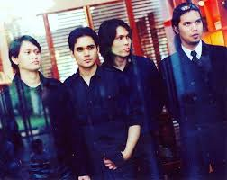
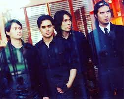

Sejarah Dewa 19
Awal Pembentukan (1986-1990)
Dewa 19 dibentuk di Surabaya pada tahun 1986 oleh Ahmad Dhani dan kawan-kawan. Awalnya, band ini bernama "Dewa" dan terdiri dari Ahmad Dhani (vokal, keyboard), Andra Junaidi (gitar), Erwin (bass), dan Wawan (drum). Band ini mulai menarik perhatian setelah mereka merilis album pertama mereka, Dewa 19, pada tahun 1992 yang berhasil mencuri perhatian publik dengan lagu-lagu seperti "Kangen" dan "Cinta Kan Membawaku."
Perkembangan Karier (1990-an)
Sepanjang tahun 1990-an, Dewa 19 mencapai puncak popularitas dengan merilis album-album sukses seperti The Best of Dewa 19 (1999) dan Bintang Lima (2000). Album-album ini menampilkan berbagai hits yang menjadi lagu-lagu ikonik di Indonesia, termasuk "Pupus," "Separuh Aku," dan "Risalah Hati." Dewa 19 juga dikenal karena inovasi musik mereka yang menggabungkan rock dengan elemen pop dan balada.
Pencapaian dan Pengaruh (2000-an hingga sekarang)
Dewa 19 terus berinovasi dan beradaptasi dengan perubahan zaman. Mereka menjadi salah satu band legendaris di Indonesia dengan berbagai penghargaan dan prestasi, termasuk Anugerah Musik Indonesia (AMI) dan MTV Indonesia Awards. Meskipun mengalami beberapa perubahan personel, Dewa 19 tetap eksis dan meluncurkan album The Best of Dewa 19 (2005) serta Cinta dan Rahasia (2018). Dengan lebih dari 20 juta album terjual, Dewa 19 tetap menjadi inspirasi bagi banyak musisi dan penggemar musik di Indonesia.
Galeri Foto Dewa 19


 

Highlight Personel Band
Ahmad Dhani (Keyboard, Vokal)
Sebagai pendiri dan motor utama Dewa 19, Ahmad Dhani dikenal sebagai produser dan pencipta lagu-lagu hits Dewa 19. Kreativitasnya dalam mencampurkan berbagai genre musik seperti rock, pop, dan balada menjadikan Dewa 19 sebagai salah satu band paling inovatif di Indonesia. Selain di Dewa 19, Dhani juga sukses membangun karier sebagai produser dan solois.

Andra Junaidi (Gitar)
Andra merupakan gitaris utama Dewa 19 yang ikut mendirikan band ini bersama Ahmad Dhani. Gaya permainan gitarnya yang khas, terutama di lagu-lagu rock seperti "Separuh Nafas" dan "Roman Picisan," menjadi ciri khas Dewa 19. Andra juga memiliki proyek band lainnya, Andra and The Backbone, yang juga terkenal di kancah musik Indonesia.
Ari Lasso (Vokal, 1992-1999)
Ari Lasso adalah vokalis utama Dewa 19 pada awal kesuksesan mereka. Suaranya yang khas terdengar di banyak lagu hits Dewa 19, seperti "Kangen" dan "Cinta Kan Membawamu." Ari Lasso keluar dari Dewa 19 pada akhir 1990-an dan melanjutkan karier solo yang sangat sukses di industri musik.
Once Mekel (Vokal, 1999-2011)
Menggantikan Ari Lasso sebagai vokalis, Once Mekel membawa suara baru ke Dewa 19 dengan vokalnya yang powerful dan bertenaga. Ia berkontribusi pada beberapa album Dewa 19 yang paling sukses, termasuk Bintang Lima dan Cintailah Cinta. Lagu-lagu seperti "Pupus" dan "Arjuna" menunjukkan kekuatan vokalnya yang memikat.
Virzha (Vokal, 2014-sekarang)
Virzha bergabung dengan Dewa 19 pada tahun 2014 setelah memenangkan perhatian publik melalui ajang pencarian bakat Indonesian Idol. Suara serak yang khas dan energik miliknya membawa warna baru pada lagu-lagu Dewa 19 dalam pertunjukan langsung mereka, dan ia dengan cepat diterima oleh para penggemar.
Marcello Tahitoe (Ello) (Vokal, 2022-sekarang)
Marcello Tahitoe, lebih dikenal dengan nama Ello, mulai bergabung dengan Dewa 19 pada tahun 2022. Dikenal sebagai penyanyi solo dengan suara yang soulful, Ello membawa interpretasi yang unik dan fresh ke dalam lagu-lagu Dewa 19, menambah variasi dalam pertunjukan band ini.
Yuke Sampurna (Bass, 2002-sekarang)
Yuke bergabung dengan Dewa 19 pada tahun 2002 dan menjadi bassist tetap hingga sekarang. Sebelumnya, ia dikenal sebagai anggota band The Groove. Kontribusinya pada Dewa 19 membawa sentuhan groove dan dinamika baru di lagu-lagu mereka.
Agung Yudha (Drum, 2007-2011)
Agung bergabung sebagai drummer Dewa 19 pada tahun 2007 menggantikan Tyo Nugros. Meskipun masa keanggotaannya tidak panjang, Agung memberikan kontribusi yang signifikan dalam penampilan live Dewa 19 selama tur dan konser.
Tyo Nugros (Drum, 1999-2007)
Tyo Nugros adalah drummer Dewa 19 yang dikenal dengan gaya permainannya yang solid dan energik. Bersama Tyo, Dewa 19 merilis beberapa album besar, termasuk Bintang Lima dan Cintailah Cinta. Ia juga terkenal karena aksi panggungnya yang penuh energi.
Video Klip dan Cuplikan Konser Dewa 19
Video Klip "Kangen"
Lagu "Kangen" adalah salah satu lagu paling ikonik dari Dewa 19 yang dirilis pada album Dewa 19 (1992). Lagu ini menjadi favorit banyak orang dan sering dinyanyikan dalam berbagai acara. Video klip ini menggambarkan tema cinta yang mendalam, disertai dengan melodi yang menyentuh hati.
Cuplikan Konser Dewa 19 di Java Jazz Festival
Dewa 19 telah tampil di banyak festival musik, dan penampilan mereka di Java Jazz Festival menjadi salah satu momen berkesan. Dalam cuplikan konser ini, penonton dapat melihat penampilan energik band dan interaksi mereka dengan penggemar, serta lagu-lagu favorit yang dinyanyikan secara langsung.
Video Klip "Separuh Nafas"
"Separuh Nafas" adalah lagu lain yang sangat terkenal dari Dewa 19, dirilis dalam album Bintang Lima (2000). Lagu ini terkenal dengan liriknya yang mendalam dan melodi yang menggugah. Video klip ini menggambarkan perjalanan emosional yang selaras dengan tema lagu.
Video Klip "Pupus"
"Pupus" adalah lagu yang sangat emosional dan populer dari album Bintang Lima. Dalam video klip ini, penonton bisa merasakan kedalaman emosi yang disampaikan melalui lirik dan melodi yang menyentuh.
Video Klip "Arjuna"
Lagu "Arjuna" merupakan salah satu lagu yang banyak digemari dari album Cintailah Cinta. Video klip ini menampilkan penampilan Dewa 19 yang penuh energi dan semangat, menciptakan atmosfer yang menghibur.
Untuk lebih banyak video dan cuplikan konser, kunjungi laman resmi YouTube Dewa 19 Official.
Quote Ikonik
Ahmad Dhani (Keyboard, Vokal): "Musik adalah jiwa dari kehidupan. Ia tidak hanya mengalir dalam nada, tetapi juga dalam setiap detak jantung."
Andra Junaidi (Gitar): "Musik itu universal. Ia menghubungkan setiap orang, tanpa memandang latar belakang."
Ari Lasso (Vokal): "Setiap lagu adalah cerita yang ingin disampaikan, dan kami berusaha untuk membuat cerita itu hidup dalam setiap penampilan."
Once Mekel (Vokal): "Kami tidak hanya membuat musik; kami menciptakan momen yang akan diingat selamanya."
Virzha (Vokal): "Bagi saya, menyanyikan lagu Dewa 19 adalah seperti berbicara dengan jiwa-jiwa yang merindukan cinta."
Marcello Tahitoe/Ello (Vokal): "Menjadi bagian dari Dewa 19 adalah mimpi yang menjadi kenyataan, dan saya ingin memberikan yang terbaik untuk para penggemar."
Yuke Sampurna (Bass): "Musik yang kami buat adalah cerminan dari pengalaman hidup kami, dan kami berharap itu dapat menyentuh hati pendengar."
Agung Yudha (Drum): "Setiap ketukan drum adalah energi yang kami bagi dengan penonton, dan itu adalah kebahagiaan tersendiri."
Tyo Nugros (Drum): "Saya merasa terhormat bisa menjadi bagian dari sejarah Dewa 19 dan terus melanjutkan legasi musik yang hebat ini."